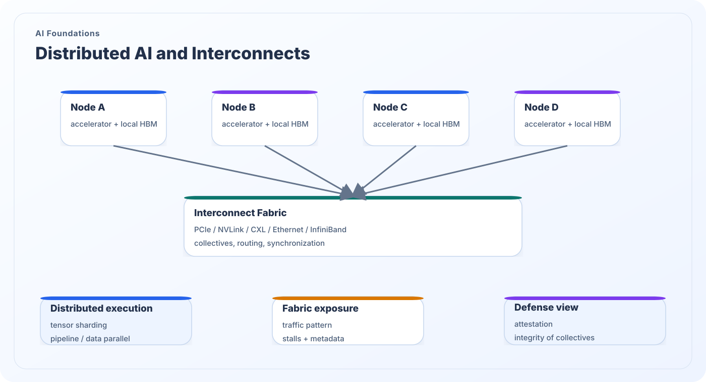

Distributed AI and Interconnects
Large AI systems increasingly rely on distributed execution across many accelerators, servers, or racks. Once tensors, gradients, optimizer state, or KV-cache fragments move across interconnect fabrics, communication itself becomes part of the security problem.
What this topic covers
Distributed AI systems exchange activations, gradients, optimizer state, or cache fragments through interconnect fabrics such as NVLink, PCIe, CXL, Ethernet, InfiniBand, or switch fabrics spanning racks. Collective communication and topology-aware scheduling are essential to keep many devices working together efficiently.
From a security perspective, those communication layers are not invisible plumbing. Traffic patterns, synchronization stalls, topology placement, metadata, and orchestration behavior can reveal workload structure or become targets for denial, integrity disruption, or cross-tenant observation. A modern AI threat model is incomplete if it ignores the networked execution path.
Security significance
- Communication cost can dominate execution, making interconnect traffic a major performance and security signal.
- Collectives and synchronization expose metadata about batch structure, sharding, and workload phase.
- Distributed execution broadens trust boundaries from a single device to a coordinated system.
- Attestation, integrity, and isolation become multi-node properties rather than local guarantees.

Distributed execution building blocks
A secure analysis of scale-out AI begins with the communication structure itself.
Nodes and local memories
Each node has its own accelerator-local state, memory hierarchy, and scheduler behavior. Distributed execution never eliminates local security questions; it multiplies them across many participants.
Interconnect and collective operations
All-reduce, all-gather, scatter, and pipeline synchronization determine how state moves across the system. These operations can reveal workload structure and create integrity-sensitive control points.
Placement and orchestration metadata
Topology choices, rack placement, route selection, and scheduling metadata influence both efficiency and observability. Even without reading tensor values, an observer may learn a great deal from coordination patterns.
Distributed-system security questions
Security assurance in scale-out AI must include communication-aware reasoning.
What can the fabric observer infer?
Traffic timing, volume, synchronization barriers, and collective cadence may reveal model family, phase, or scaling behavior even when payloads stay encrypted or inaccessible.
Where does integrity matter most?
Faults or misrouting in collectives can corrupt global state, poison distributed updates, or destabilize inference pipelines that rely on synchronized shards.
How are nodes authenticated and isolated?
Distributed AI requires node identity, attestation, trusted routing assumptions, and clear separation between benign telemetry and information that leaks tenant or workload structure.
Back to the research map
Return to the structured research overview or continue browsing the other AI foundations and AI security themes.